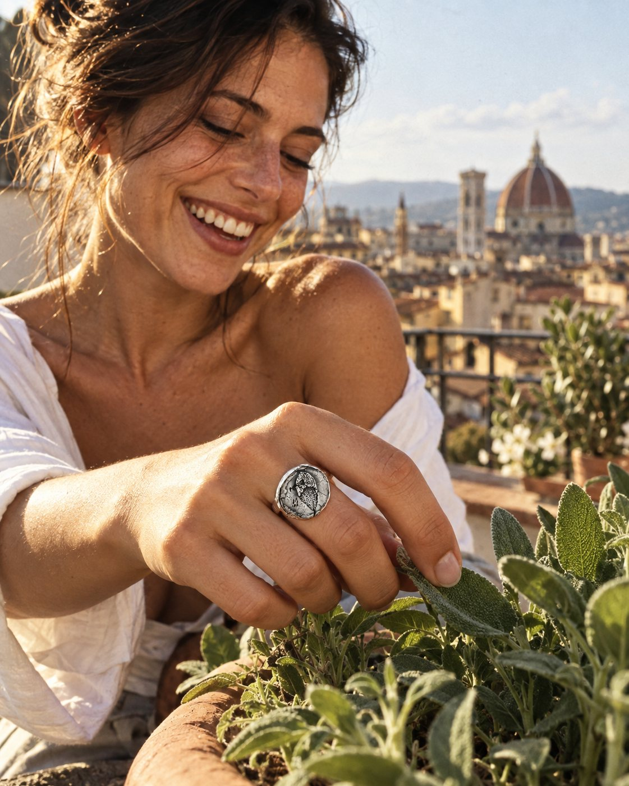
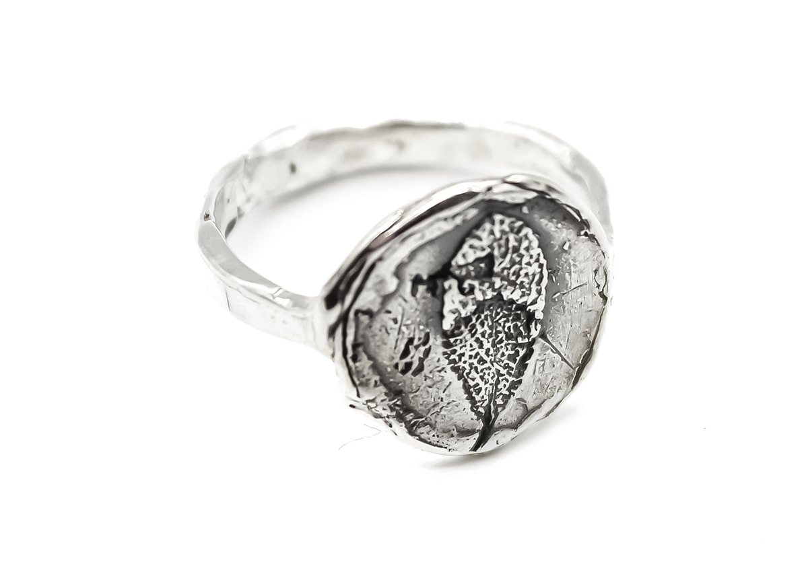
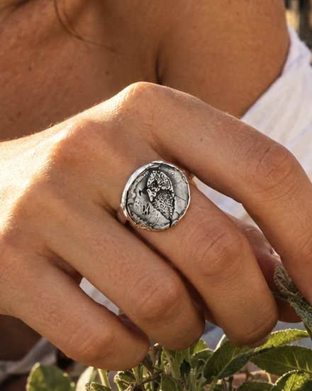

Immaginato a Firenze, su una terrazza in Oltrarno a fine settembre: una risata, la salvia colta dal vaso, l'anello al dito.

Sono partito dalla foto del vostro sito. L'anello non è stato ridisegnato: l'argento lucido, la texture brunita delle foglie di salvia, la fascia martellata. Cambia solo la vita che gli sta intorno.


La preparo sull'Anello Salvia o su un altro pezzo della collezione Botanica. Prima consegna in cinque-sette giorni, senza organizzare uno shooting.
Le immagini sono costruite con strumenti di intelligenza artificiale, sotto la mia direzione creativa e con il mio ritocco, a partire dal vostro packshot: il prodotto resta quello reale. Prova non commerciale, preparata solo per voi.